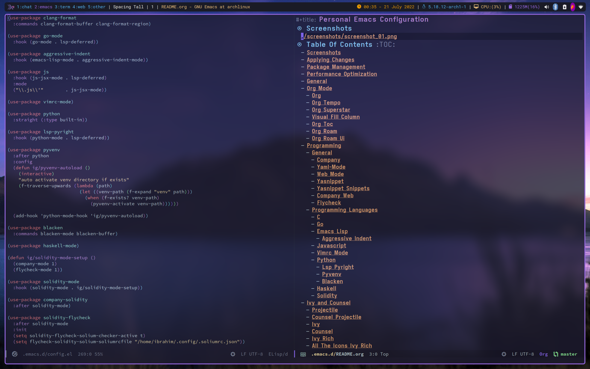

Personal Emacs Configuration
Table of Contents
Screenshots

Applying Changes
(defun ig/async-process (command &optional name filter) "Start an async process by running the COMMAND string with bash. Return the process object for it. NAME is name for the process. Default is \"async-process\". FILTER is function that runs after the process is finished, its args should be \"(process output)\". Default is just messages the output." (make-process :command `("bash" "-c" ,command) :name (if name name "async-process") :filter (if filter filter (lambda (process output) (message (s-trim output)))))) (defun ig/add-local-hook (hook function) "Add buffer-local hook." (add-hook hook function :local t)) (defun ig/tangle-config () "Export code blocks from the literate config file asynchronously." (interactive) ;; prevent emacs from killing until tangle-process finished (add-to-list 'kill-emacs-query-functions (lambda () (or (not (process-live-p (get-process "tangle-process"))) (y-or-n-p "\"ig/tangle-config\" is running; kill it? ")))) ;; tangle config asynchronously (ig/async-process (format "emacs %s --batch --eval '(org-babel-tangle nil \"%s\")'" config-org config-el) "tangle-process")) (add-hook 'org-mode-hook (lambda () (if (equal buffer-file-truename config-org) (ig/add-local-hook 'after-save-hook 'ig/tangle-config))))
Package Management
;; Install straight (defvar bootstrap-version) (let ((bootstrap-file (expand-file-name "straight/repos/straight.el/bootstrap.el" user-emacs-directory)) (bootstrap-version 5)) (unless (file-exists-p bootstrap-file) (with-current-buffer (url-retrieve-synchronously "https://raw.githubusercontent.com/raxod502/straight.el/develop/install.el" 'silent 'inhibit-cookies) (goto-char (point-max)) (eval-print-last-sexp))) (load bootstrap-file nil 'nomessage)) (straight-use-package 'use-package) (setq straight-use-package-by-default t)
Performance Optimization
(add-to-list 'default-frame-alist '(undecorated . t)) (setq straight-check-for-modifications '(check-on-save find-when-checking)) ;; Set the threshold to very high to not garbage collect (setq gc-cons-threshold most-positive-fixnum) ;; Restore `gc-cons-threshold' to a reasonable value after init (add-hook 'emacs-startup-hook ; Hook that runs after init files are loaded (lambda () ;; Set a reasonable value that won't hang Emacs or won't increase ram usage (setq gc-cons-threshold (* 50 1000 1000))) 100) ; Make sure this function will run at the end of `emacs-startup-hook's.
General
;; To keep folders clean (use-package no-littering) (setq create-lockfiles nil) (setq user-full-name "Seyyid İbrahim Güleç" user-mail-address "seyyidibrahimgulec@gmail.com") (setq inhibit-startup-message t) ; Don't show the splash screen (setq ring-bell-function 'ignore) ; prevent beep sound. (setq require-final-newline t) ; Add new line end of the file (setq truncate-lines t) (setq-default fill-column 80 sentence-end-double-space nil indent-tabs-mode nil ; Use spaces instead of tabs tab-width 4) ;; Modes (global-display-line-numbers-mode -1) (column-number-mode 1) (menu-bar-mode -1) (tool-bar-mode -1) (scroll-bar-mode -1) (global-hl-line-mode 1) (global-auto-revert-mode 1) (blink-cursor-mode -1) (delete-selection-mode 1) (electric-pair-mode -1) ;; (pixel-scroll-precision-mode 1) (setq global-auto-revert-non-file-buffers t) ;; (recentf-mode 1) ;; (savehist-mode 1) ;; (setq history-length 25) ;; (save-place-mode 1) ;; Move custom variables to seperate file (setq custom-file (locate-user-emacs-file "custom-vars.el")) (load custom-file 'noerror 'nomessage) ;; Make sure to focus when a new emacsclient frame created. (add-hook 'server-after-make-frame-hook (lambda () (select-frame-set-input-focus (selected-frame)))) ;; Macos Key Bindings ;; (setq mac-option-key-is-meta nil ;; mac-command-key-is-meta t ;; mac-command-modifier 'meta ;; mac-option-modifier 'none) (defun kill-all-buffers () "Kill all buffers." (interactive) (mapc 'kill-buffer (buffer-list))) (defun ig/display-startup-time () (message "Emacs loaded in %s with %d garbage collections." (format "%.2f seconds" (float-time (time-subtract after-init-time before-init-time))) gcs-done)) (add-hook 'emacs-startup-hook #'ig/display-startup-time) (defun ig/open-emacs-configuration () (interactive) (find-file "~/.emacs.d/README.org")) (defun ig/open-dotfiles-configuration () (interactive) (find-file "~/README.org")) (global-set-key (kbd "M-o e") 'ig/open-emacs-configuration) (global-set-key (kbd "M-o d") 'ig/open-dotfiles-configuration) (use-package rg :defer t) (use-package simple-httpd :ensure t)
Org Mode
Org
(defun ig/org-mode-setup () (org-indent-mode) (variable-pitch-mode 1) (auto-fill-mode 0) (visual-line-mode 1)) (use-package org :straight (:type built-in) :hook (org-mode . ig/org-mode-setup) :custom (org-confirm-babel-evaluate nil) (org-ellipsis " ⤵") ;; ↴, ▼, ▶, ⤵ (org-hide-emphasis-markers t) (org-agenda-files `(,(expand-file-name "agenda.org" org-directory))) :custom-face (org-document-title ((t (:font "Iosevka Aile" :height 1.3 :weight bold)))) (org-level-7 ((t (:font "Iosevka Aile" :inherit outline-7 :height 1.1 :weight bold)))) (org-level-6 ((t (:font "Iosevka Aile" :inherit outline-6 :height 1.1 :weight bold)))) (org-level-5 ((t (:font "Iosevka Aile" :inherit outline-5 :height 1.1 :weight bold)))) (org-level-4 ((t (:font "Iosevka Aile" :inherit outline-4 :height 1.15 :weight bold)))) (org-level-3 ((t (:font "Iosevka Aile" :inherit outline-3 :height 1.2 :weight bold)))) (org-level-2 ((t (:font "Iosevka Aile" :inherit outline-2 :height 1.25 :weight bold)))) (org-level-1 ((t (:font "Iosevka Aile" :inherit outline-1 :height 1.3 :weight bold)))) (variable-pitch ((t (:font "Iosevka Aile" :height 120)))) (fixed-pitch ((t (:font "Iosevka Aile" :height 120)))) ;; Ensure that anything that should be fixed-pitch in Org files appears that way (org-block ((t (:background "#242237" :foreground nil :inherit fixed-pitch)))) (org-block-begin-line ((t (:background "#242237")))) (org-table ((t (:inherit fixed-pitch)))) (org-formula ((t (:inherit fixed-pitch)))) (org-code ((t (:inherit (shadow fixed-pitch))))) (org-table ((t (:inherit (shadow fixed-pitch))))) ;; (org-indent ((t (:inherit (org-hide fixed-pitch))))) (org-verbatim ((t (:inherit (shadow fixed-pitch))))) (org-special-keyword ((t (:inherit (font-lock-comment-face fixed-pitch))))) (org-meta-line ((t (:inherit (font-lock-comment-face fixed-pitch))))) (org-checkbox ((t (:inherit (fixed-pitch org-todo))))))
Org Tempo
(use-package org-tempo :straight (:type built-in) :config (add-to-list 'org-structure-template-alist '("sh" . "src shell")) (add-to-list 'org-structure-template-alist '("el" . "src emacs-lisp")) (add-to-list 'org-structure-template-alist '("py" . "src python")) (add-to-list 'org-structure-template-alist '("hs" . "src haskell")) (add-to-list 'org-structure-template-alist '("cc" . "src c")) (add-to-list 'org-structure-template-alist '("rs" . "src rust")))
Org Superstar
(use-package org-superstar :after org :hook (org-mode . org-superstar-mode) :custom (org-superstar-remove-leading-stars t) (org-superstar-headline-bullets-list '("◉" "○" "●" "○" "●" "○" "●")))
Visual Fill Column
(defun ig/org-mode-visual-fill () (setq visual-fill-column-width 110 visual-fill-column-center-text t) (visual-fill-column-mode 1)) (use-package visual-fill-column :defer t :hook (org-mode . ig/org-mode-visual-fill))
Org Toc
(use-package toc-org :custom (toc-org-max-depth 10) (toc-org-insert-silently t) :hook (org-mode . toc-org-mode))
Org Roam
(use-package org-roam :ensure t :init (setq org-roam-v2-ack t) :custom (org-roam-directory "~/RoamNotes") (org-roam-completion-everywhere t) :bind (("C-c n l" . org-roam-buffer-toggle) ("C-c n f" . org-roam-node-find) ("C-c n i" . org-roam-node-insert) :map org-mode-map ("C-M-i" . completion-at-point)) :config (org-roam-setup))
Org Roam Ui
(use-package org-roam-ui :straight (:host github :repo "org-roam/org-roam-ui" :branch "main" :files ("*.el" "out")) :after org-roam :custom (org-roam-ui-sync-theme t) (org-roam-ui-follow t) (org-roam-ui-update-on-save t) (org-roam-ui-open-on-start t))
Programming
General
Company
(use-package company
:custom
(company-idle-delay 0))
Yaml-Mode
(use-package yaml-mode :mode "\\.ya?ml\\'")
Web Mode
(use-package web-mode :custom (css-indent-offset 2) (web-mode-markup-indent-offset 2) (web-mode-enable-auto-indentation nil) (web-mode-enable-auto-pairing nil) (web-mode-engines-alist '(("django" . "\\.html\\'"))) :mode ;; Copied from spacemacs (("\\.phtml\\'" . web-mode) ("\\.tpl\\.php\\'" . web-mode) ("\\.twig\\'" . web-mode) ("\\.xml\\'" . web-mode) ("\\.html\\'" . web-mode) ("\\.htm\\'" . web-mode) ("\\.[gj]sp\\'" . web-mode) ("\\.as[cp]x?\\'" . web-mode) ("\\.eex\\'" . web-mode) ("\\.erb\\'" . web-mode) ("\\.mustache\\'" . web-mode) ("\\.handlebars\\'" . web-mode) ("\\.hbs\\'" . web-mode) ("\\.eco\\'" . web-mode) ("\\.ejs\\'" . web-mode) ("\\.svelte\\'" . web-mode) ("\\.djhtml\\'" . web-mode) ("\\.mjml\\'" . web-mode)))
Yasnippet
(use-package yasnippet :hook (prog-mode . yas-minor-mode) :config (yas-reload-all))
Yasnippet Snippets
(use-package yasnippet-snippets
:after yasnippet)
Company Web
(use-package company-web :after web-mode :config (add-to-list 'company-backends '(company-web-html :with company-yasnippet)))
Flycheck
(use-package flycheck :defer t :hook (lsp-mode . flycheck-mode) :custom (flycheck-checker-error-threshold 1000))
Programming Languages
Rust
(use-package rust-mode
:hook
(rust-mode . lsp-deferred))
C
(use-package cc-mode :hook (c-mode . lsp-deferred)) (setq c-basic-offset 4) (use-package clang-format :commands clang-format-buffer clang-format-region)
Go
(use-package go-mode
:hook (go-mode . lsp-deferred))
Emacs Lisp
Vimrc Mode
(use-package vimrc-mode)
Python
(use-package python :straight (:type built-in))
- Lsp Pyright
(use-package lsp-pyright :hook (python-mode . lsp-deferred)) - Pyvenv
(use-package pyvenv :after python :config (defun ig/pyvenv-autoload () (interactive) "auto activate venv directory if exists" (f-traverse-upwards (lambda (path) (let ((venv-path (f-expand "venv" path))) (when (f-exists? venv-path) (pyvenv-activate venv-path)))))) (add-hook 'python-mode-hook 'ig/pyvenv-autoload))
- Blacken
(use-package blacken :commands blacken-mode blacken-buffer)
Haskell
(use-package haskell-mode)
Solidity
(defun ig/solidity-mode-setup () (company-mode 1) (flycheck-mode 1)) (use-package solidity-mode :hook (solidity-mode . ig/solidity-mode-setup)) (use-package company-solidity :after solidity-mode) (use-package solidity-flycheck :after solidity-mode :init (setq solidity-flycheck-solium-checker-active t) (setq flycheck-solidity-solium-soliumrcfile "/home/ibrahim/.config/.soliumrc.json")) (add-hook 'solidity-mode-hook (lambda () (set (make-local-variable 'company-backends) (append '((company-solidity company-capf company-dabbrev-code)) company-backends))))
Ivy and Counsel
Projectile
;; Projectile (use-package projectile :config (projectile-mode) :demand t :bind-keymap ("C-c p" . projectile-command-map) :init (setq projectile-switch-project-action #'projectile-dired))
Counsel Projectile
;; Counsel Projectile (use-package counsel-projectile :after projectile :bind (("C-x f" . counsel-projectile-find-file)) :config (counsel-projectile-mode))
Ivy
(use-package ivy :bind (("C-s" . swiper)) ;; :map ivy-minibuffer-map ;; ("TAB" . ivy-alt-done) ;; ("C-e" . ivy-alt-done)) :init (ivy-mode 1) :custom-face (ivy-current-match ((t (:extend t)))) :config (setcdr (assoc t ivy-format-functions-alist) #'ivy-format-function-line) ;; to extend ivy line :custom (ivy-format-function 'ivy-format-function-line) (ivy-initial-inputs-alist nil)) ;; Don't start searches with ^
Counsel
(use-package counsel :demand t :bind (("M-x" . counsel-M-x) ("C-x b" . counsel-ibuffer) ("C-x C-f" . counsel-find-file) :map minibuffer-local-map ("C-r" . 'counsel-minibuffer-history)))
Ivy Rich
(use-package ivy-rich :init (ivy-rich-mode 1) :after counsel)
All The Icons Ivy Rich
(use-package all-the-icons-ivy-rich :ensure t :init (all-the-icons-ivy-rich-mode 1))
Prescient
(use-package prescient :after counsel :config (prescient-persist-mode 1))
Ivy Prescient
(use-package ivy-prescient :after prescient :config (ivy-prescient-mode 1))
Flx
(use-package flx ;; Improves sorting for fuzzy-matched results :after ivy :defer t :init (setq ivy-flx-limit 10000))
Docker
Docker
(use-package docker
:commands docker)
Dockerfile Mode
(use-package dockerfile-mode :mode "Dockerfile\\'")
Docker Compose Mode
(use-package docker-compose-mode :mode "docker-compose\\'")
Lsp
Lsp Mode
(use-package lsp-mode :commands (lsp lsp-deferred) :custom (lsp-headerline-breadcrumb-enable nil) (lsp-diagnostics-provider :none) ;; To disable default lsp flycheck (lsp-file-watch-threshold 10000)) (setq +format-with-lsp nil)
Lsp Ui
(use-package lsp-ui :hook (lsp-mode . lsp-ui-mode) :custom (lsp-ui-doc-show-with-cursor nil) (lsp-ui-doc-show-with-mouse nil))
Appearance
Font
(set-face-attribute 'default nil :font "Roboto Mono" :height 100)
Theme
(use-package doom-themes :defer t :init (load-theme 'doom-challenger-deep t)) (set-frame-parameter (selected-frame) 'alpha '(80 . 80)) (add-to-list 'default-frame-alist '(alpha . (80 . 80)))
Minions
(use-package minions
:hook (doom-modeline-mode . minions-mode))
Rainbow Delimiters
(use-package rainbow-delimiters
:hook (prog-mode . rainbow-delimiters-mode))
Doom Modeline
(use-package doom-modeline :config (doom-modeline-mode) :custom (doom-modeline-minor-modes t))
All The Icons
(use-package all-the-icons)
All The Icons Dired
(use-package all-the-icons-dired
:hook (dired-mode . all-the-icons-dired-mode))
Beacon
(use-package beacon
:config
(beacon-mode 1))
Text Editing
General
;; Some Extra Keybindings ;; source: spacemacs' better default layer (defun backward-kill-word-or-region () "Calls `kill-region' when a region is active and `backward-kill-word' otherwise." (interactive) (if (region-active-p) (call-interactively 'kill-region) (backward-kill-word 1))) (global-set-key (kbd "C-w") 'backward-kill-word-or-region) ;; Use shell-like backspace C-h, rebind help to C-? (keyboard-translate ?\C-h ?\C-?) ;; Fix emacs daemon (add-hook 'server-after-make-frame-hook (lambda () (keyboard-translate ?\C-h ?\C-?))) (global-set-key (kbd "C-?") 'help-command)
Multiple Cursors
;; Multiple Cursors (use-package multiple-cursors :custom (mc/always-run-for-all t) :bind* (("C-M-n" . mc/mark-next-like-this) ("C-M-p" . mc/mark-previous-like-this) ("C-M-S-n" . mc/skip-to-next-like-this) ("C-M-S-p" . mc/skip-to-previous-like-this) ("C-S-n" . mc/unmark-previous-like-this) ("C-S-p" . mc/unmark-next-like-this) ("C-M-<mouse-1>" . mc/add-cursor-on-click)))
Expand Region
;; Expand Region (use-package expand-region :custom (expand-region-fast-keys-enabled nil) (expand-region-subword-enabled t) :bind (("C-t" . er/expand-region)))
Version Control
Magit
(use-package magit
:commands magit)
Git Link
(use-package git-link
:commands git-link)
Extra Tools
Winner
(use-package winner :bind (("M-u" . winner-undo) ("M-U" . winner-redo)) :config (winner-mode))
Which Key
(use-package which-key :init (which-key-mode) :custom (which-key-idle-delay 0.3))
Helpful
(use-package helpful :custom (counsel-describe-function-function #'helpful-callable) (counsel-describe-variable-function #'helpful-variable) :bind ([remap describe-function] . helpful-function) ([remap describe-symbol] . helpful-symbol) ([remap describe-variable] . counsel-describe-variable) ([remap describe-command] . helpful-command) ([remap describe-key] . helpful-key))
Turkish
(use-package turkish
:commands turkish-mode turkish-correct-region turkish-asciify-region)
Sozluk
(use-package sozluk :straight (:host github :repo "isamert/sozluk.el") :commands sozluk)
Xwidget
(use-package xwidget :straight (:type built-in) :commands xwidget-webkit-browse-url)
Screenshot
(use-package screenshot :straight (:host github :repo "tecosaur/screenshot" :build (:not compile)) :commands screenshot :custom (screenshot-max-width 300) :hook (screenshot-buffer-creation . (lambda () (hl-line-mode -1))))
Restclient
Restclient
(use-package restclient :mode ("\\.http\\'" . restclient-mode))
Company Restclient
(use-package company-restclient :after restclient :hook (restclient-mode . (lambda () (add-to-list 'company-backends 'company-restclient))))
Highlight TODOs
(use-package hl-todo
:config
(global-hl-todo-mode 1))